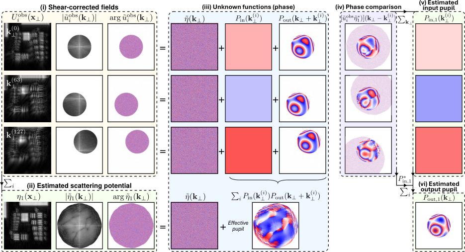
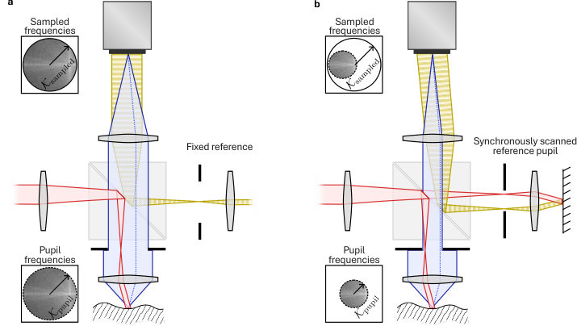
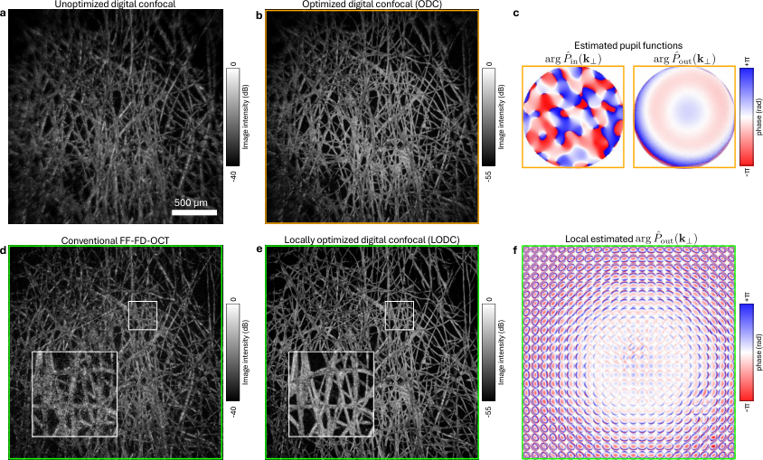
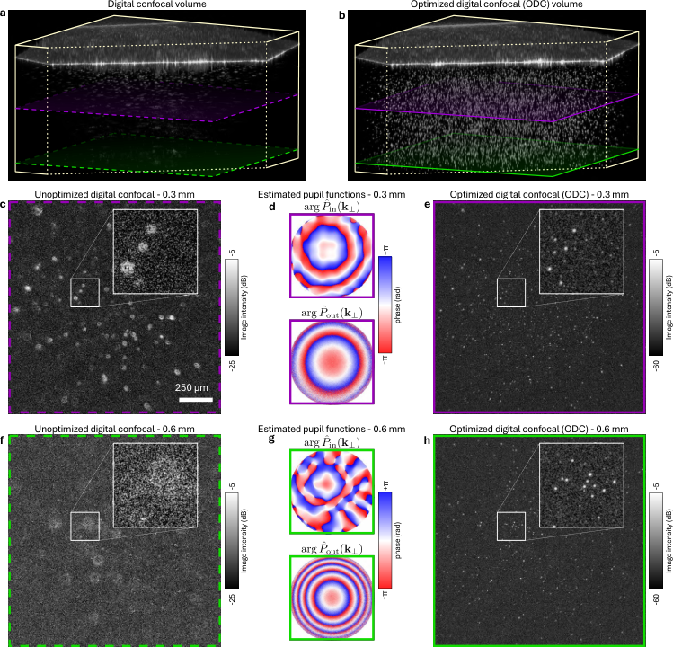
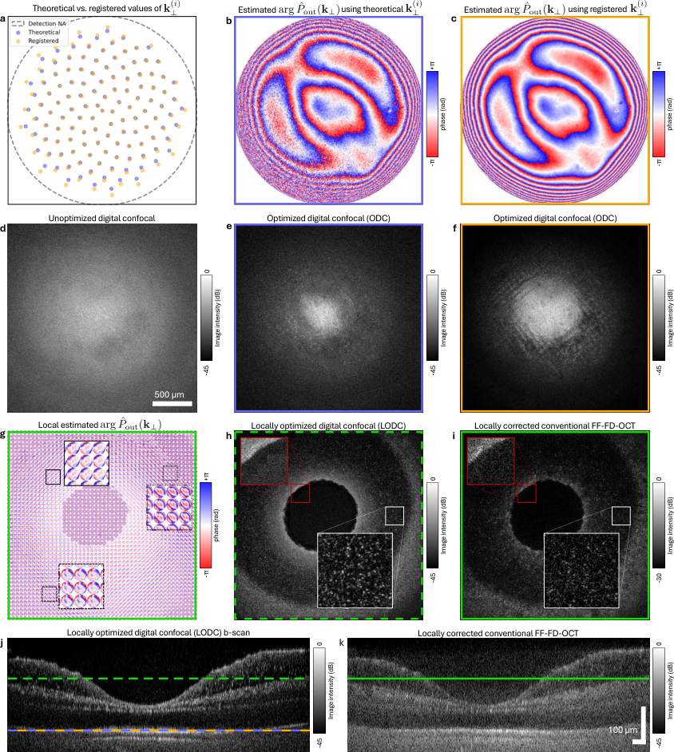
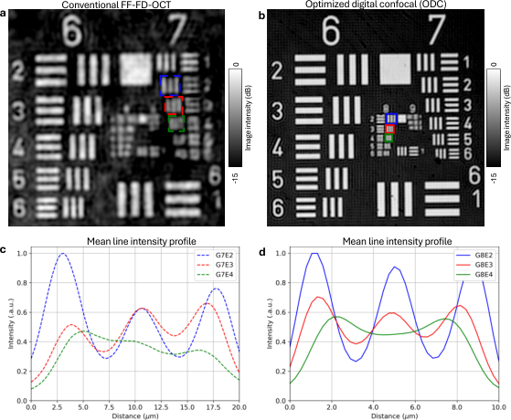

高空间带宽积全息光学相干断层扫描中的数字共焦成像
全视场傅里叶域光学相干断层扫描（FF-FD-OCT）可实现快速体成像，但缺乏点扫描 OCT 固有的共焦门控。通过在多个斜入射照明下采集体数据，可在后处理中合成数字共焦体，该技术最初在反射矩阵成像（RMI）框架内提出。然而，现有实现通常为时域、离轴，或使用迈克尔逊干涉仪，这会降低灵敏度、速度和可用空间带宽积（SBP）。本文提出一种马赫-曾德尔配置的斜照明 FF-FD-OCT 系统。该设置可优化利用 SBP，使有效采集吞吐量最高提高四倍。此外，我们将散射和像差建模为超定系统，从而可对交替最小二乘问题给出闭式解。所得的迭代优化等价于最先进的单散射闭环累积（CLASS）算法。我们在晶状体组织、PSF 模体、USAF 靶和模型眼中演示了该设置与重建方法。所得数字共焦体提供局部优化的聚焦和探测质量，并相比传统 FF-FD-OCT 显示出改善的分辨率和信噪比（SNR）。该技术结合了 FF-FD-OCT 与共焦 OCT 的优势，同时减轻了两者的局限。
1 引言
光学相干断层扫描（OCT）是一种无创、无标记的成像技术，用于以微米级分辨率创建半透明样品的体积横截面。它最初以共聚焦时域（TD）配置提出，使用点扫描和低相干干涉测量来实现深度成像[1]。随着傅里叶域（FD）OCT的发展，采集速度和SNR得到显著提升，该技术可同时获取来自所有深度的散射信息[2, 3, 4]。全场（FF）OCT进一步提高了速度，它用对感兴趣区域的全局照明取代点扫描（代价是失去共聚焦性），并使用相机并行捕获[5, 6]。当与FD-OCT结合时，无扫描和相机技术的进步实现了前所未有的采集速度，使其特别适用于某些体内应用[7]。
尽管技术上有这些进展，像差在OCT成像中仍然是一个挑战。像差可能由光学装置和物体（尤其是介质深处）共同引起，导致入射波和出射波偏离其理想的单散射路径 [8, 9]。因此，多次散射光会阻碍光在物体内部的最佳传输和收集。 consequently，由于点扩散函数（PSF）受到扰动以及信噪比（SNR）降低，图像质量受到影响。共聚焦系统比全视场系统更能抵抗PSF扰动，因为共聚焦门控可以部分抑制离焦光和多次散射光 [8, 10]。然而，在强散射情况下，由于无法保持理想的照明与探测针孔重叠，共聚焦门控的效果会降低。
为了优化光传输和探测质量，自适应光学（AO）领域得以发展。在这里，波前整形通过照明臂和/或探测臂中的空间光调制器（SLM）或可变形镜在物理上实现 [9]。其目标是重塑波前以抵消存在的像差。然而，这需要存在一个已知的导星（术语源自天文学），其强度可以被优化，而情况往往并非如此，尤其是在 in vivo 应用中 [11, 12]。此外，基于硬件的AO通常需要复杂的装置、闭环控制，并且通常局限于单个等晕斑 [13]。
计算自适应光学（CAO）试图通过在后处理中校正波前误差来克服这些限制。重要的是，这要求采集的数据在横向上是相位稳定的。全视场系统独特地满足这一要求，因为所有横向点都是同时采集的，从而能够在每个深度以及多个等晕斑上进行校正 [14, 7]。尽管在共聚焦OCT系统中CAO是可行的 [15, 16, 17]，但这类系统本质上对运动引起的相位误差敏感，并且可能需要复杂的运动校正方案。在其基本实现中，CAO通过使用单幅图像来执行，并能够提供（in vivo）无像差成像：通过优化导星 [18, 19]、图像指标 [7, 20, 17] 或使用分孔径方法 [21, 22, 23]。
CAO 能力最强的形式已通过反射（及类似透射）矩阵成像（RMI）框架得到演示；该框架是在超声领域相关工作 [24, 25, 26, 27] 之后于过去十年中发展起来的。它将一组在不同照明下获取的（复）宽场图像存储在反射矩阵中，该矩阵关联成像系统的输入与输出。本质上，它试图获取样品对任意输入态的全响应。常见照明方案包括点照明、（伪）随机图案，或如本文工作中的斜照明（即倾斜平面波）。随后可使用各种算法求解并校正散射行为，从而在后处理中获得理想的无干扰 PSF 和衍射极限的重建质量。
RMI 的大部分工作已在采用低相干干涉测量的离轴全息装置中完成，构成一类时域 OCT 或显微术（OCM）[28, 29, 30]。更近期的研究已在同轴扫频源 FF-FD-OCT 中演示了 RMI，实现了比时域系统高得多的采集速度 [31, 32]。与时域中的许多先前工作一样，其迈克尔逊干涉仪使参考光瞳与照明光瞳同步扫描。因此，参考波在相机上倾斜，入射到物体上的照明也同样倾斜。在时域系统中，这改善了物体与参考相干门之间的重叠，保持了干涉对比度 [33]。在扫频源 FD-OCT 中，更长的瞬时时间相干长度使得同步扫描并非严格必需，因此它仅是装置选择的结果。
然而，参考光瞳的同步扫描以空间带宽积（SBP）为代价。该无量纲量衡量一次测量中所包含的信息量，并且是所获取视场（空间）与物体空间频率（带宽）的乘积 [34, 35]。倾斜参考波在相机上引入相位梯度，从而提高了检测信号的频率。这种提高并未提供关于物体的额外信息，但确实提高了对信号进行 Nyquist 采样所需的带宽。因此，并非所有可用带宽都用于检测物体的空间频率，导致 SBP 欠佳。如果更高效地利用带宽，则使用相同数量的相机像素便可获取更多物体信息。
本文提出了一种在 Mach-Zehnder 干涉仪中使用固定轴上参考波的斜照明 FF-FD-OCT 系统。这使采样带宽能够等于物体信号的带宽。通过充分利用可用带宽，与同步扫描参考光瞳装置相比，SBP 提高了约四倍。结合超高速相机，采集速率达到 吉体素/秒，使其最适合于 in vivo 应用。我们展示了其与同步扫描参考光瞳系统在数据采集和处理方面的差异，并详细介绍了后续的像差校正算法。将散射和像差表示为一个超定系统，从而可获得最小二乘问题的闭式解。值得注意的是，所得算法等价于最先进的单散射闭环累积（CLASS）算法 [28]。我们给出了该算法的数学推导和直观的图示解释。我们使用 USAF 靶标量化了分辨率提升。其能力还在镜头纸中得到了进一步验证，并在 PSF 体模和模型眼中沿深度方向进行了展示。
2 方法
2.1 装置与数据采集
具备斜照明能力的 FF-FD-OCT 配置为 Mach-Zehnder 干涉仪，如图 1 所示。来自可调谐光源（SLDSources.com Broadsweeper BS-840-2-HP）的光经光纤耦合器分为物光和参考臂。在物光臂中，光被准直并照射到双轴振镜扫描镜（ScannerMAX Saturn 9B）上，该扫描镜通过 4f 系统成像到物体上。这允许在不改变照明区域位置的情况下改变样品上的照明角度。后向散射光经分束器成像到相机上。参考臂包含一个独立的准直器，光经分束器重新合束并引导到相机上。可调谐激光源从 扫描到 。在激光扫描期间，高速相机（Phantom TMX 6410）记录参考光与来自物体的散射光之间的干涉。在每次扫描和每个扫描器位置下，记录 幅干涉图，使用传感器的 个像素、帧率为 fps，有效 A-line 速率为 或 吉体素/秒。每个样品总共采集 个体数据，每个体数据对应不同的扫描器位置，采用 Fermat 螺旋模式 [36]。此外，对每个物体还在无斜扫描的情况下采集了 个体数据，以将结果与传统 FF-FD-OCT 进行比较。所有数据均在 NA 为 的条件下采集。该装置使用 Arduino Giga R1 WiFi 进行同步，向相机提供帧触发，向激光器提供触发以启动扫描，并在体数据之间向扫描器发送数字位置命令。
2.2 检测信号
在本文中，我们采用如下约定： 表示位置空间矢量 ， 表示其傅里叶共轭， 表示对应于 的单位矢量。此外， 和 分别表示在 和 平面上的相应投影。我们进一步用 表示函数 的傅里叶变换。
2.2.1 OCT 重建
斜入射照明会在物体内每个深度处引入相位梯度 ，其中 表示 照明矢量，该矢量对应照明角 和波数 。相机平面处检测到的来自物体的场由下式给出
| (1) |
这里， 是光源的光谱， 是物体波场的振幅， 是物体的三维散射势， 表示关于 的二维卷积。我们进一步定义 、、，并且光瞳函数由下式给出
| (2) |
其中 描述输入和输出像差的相位误差， 描述输入和输出的数值孔径（NA）。虽然 和 原则上应相同，但未对准和运动引起的全局相位变化可能表现为输入像差，因此将二者分离至关重要。参考波由固定参考准直器提供，振幅为 ，总距离为 ，对应于零延迟线：
| (3) |
在 FD-OCT 中，干涉图 被记录为波数 的函数。由此得到表达式
| (4) | ||||
| (5) |
前两项是自相关项和直流项。后两项是信号项和共轭信号项。聚焦于信号项，并在不失一般性地假设 的情况下，该式变为
| (6) |
with .
对信号项 作横向傅里叶变换，并应用卷积定理以及傅里叶平移定理，可以看出：当照明旋转时，物体的横向 空间在探测光瞳内发生平移：
| (7) |
在 描述恒定带通、且 因照明 而发生平移的情况下，该装置可获取传统全视场装置 [37] 无法获得的空间频率。 OCT 深度重建通过对 作沿 轴的傅里叶变换来实现。假设 NA 足够小，使得 和 ，我们得到
| (8) | ||||
| (9) |
其中 是轴向 PSF。式（9）给出物体散射势的剪切版本，即物体同一层中不同的横向位置将沿轴向平移 。从物理上看，这是由于斜照明在相机平面处引起物体与参考波之间光程长度（OPL）的横向差异所致。
为了补偿这一效应，我们将原始相位梯度 的共轭应用于轴向光谱式（6），该操作在沿 轴进行傅里叶变换之前完成：
| (10) | ||||
| (11) |
该步骤还补偿了物体 空间中的横向平移（式（7）），从而在多次测量之间使其对齐。
通过在后处理中对剪切校正后的场 求和，我们构建了所谓的数字共焦体积，
| (12) | ||||
| (13) |
其中我们使用了近似 ；如果 对光瞳进行密集扫描，该近似将变得准确。对平面波照明的求和会在所得体积的每个点处产生一个虚拟照明光斑。同时，相机像素近似为点探测。二者结合可在后处理中形成共聚焦滤波。所得 PSF 现在是（虚拟）镜像输入和输出 PSF 的乘积，从而相应提高图像质量。在实践中，有限的照明数量会阻止聚焦到单个光斑。然而更重要的是，需要处理像差，以获得最佳的虚拟照明与探测针孔重叠，并实现最大图像质量。
2.3 像差校正
针对单个入射波矢 获取的单个场包含物体信息 和像差 的混合。这使得从单个场中分离二者的问题在本质上是欠定且病态的。在我们的完整数据中，每次照明提供部分重叠的物体信息，而像差保持不变，从而有效地使系统超定。原则上，这使我们能够客观地分离并求解物体和像差，无需任何假设或先验。为便于阅读，下文中我们省略深度索引 。我们可以将解表述为 空间中的最小二乘问题：
| (14) |
这里， 表示剪切校正后测量场的横向傅里叶变换（下称孔径），作为模型的观测。这些孔径由常数振幅 、未知散射势 以及待通过优化确定的光瞳 和 描述。该模型假设单散射。
确定未知函数的一种有效方法是使用交替最小二乘：将关于 、、 的梯度设为 ，同时保持其他量固定，并依次求解相应参数。由于这会解析地确定子空间中的极值，因此将迭代趋向最优值。这导致以下更新规则，其中 是当前迭代：
| (15) | ||||
| (16) | ||||
| (17) |
在实践中发现，修改式 16 以不应用输出光瞳校正，可使散射样品获得更好的收敛性。这很可能是因为 中的大量自由度强烈影响 中的少量自由度，而如果初始估计存在噪声，这可能会带来问题。因此，在实践中对散射样品使用了以下形式：
| (18) |
此外，我们省略了分母中的归一化。这导致基于覆盖每个像素的孔径数量对 进行加权。这使得后续光瞳函数的确定对低振幅相量不那么敏感。此外，它引入了一种切趾，可抑制更高频率并近似共焦系统的传递函数。对于光瞳函数，我们最终使用相位函数 校正观测到的孔径，其相位不受光瞳函数归一化的影响。
图 2 展示了当未应用初始像差校正时，在第一次迭代期间如何确定估计值 、 和 的示意图。我们从 (i) 处的剪切校正后的场开始。每幅示意图中显示了一个轴上（）和两个斜向图像。它们的相应孔径在零填充的 空间中对齐。散射势 的最佳估计（式 (15) 对于 ）在 (ii) 中通过对所有照明求和来生成。值得注意的是， 是式 (13) 中数字共焦图像的横向傅里叶变换，显示出比单个孔径更大的 NA。由于输出和输入 PSF 的相乘抑制了旁瓣，相应图像 看起来比任何单个图像 的像差更小。在 (iii) 中显示了构成我们观测场且我们试图估计的潜在未知函数。 的潜在有效光瞳函数是移位光瞳函数之和：。这种求和平均掉了单个孔径像差相位的起伏，等价地解释了为什么 看起来像差更小。

为了估计像差，我们首先在 (iv) 中将孔径的相位与 进行比较。由于潜在物体的 空间 是相同的（如 (iii) 所示），我们仅观察到孔径的像差与 的有效光瞳之间的相位差。关键的是，由于有效光瞳中的像差在相位上大致恒定，这些差异近似于输出像差，仅相差由输入像差确定的全局相位偏移。因此，在 (v) 中，我们可以通过对相量 求和来估计 （式 (16)）。然后，我们在 (vi) 中通过对照明 求和来估计 ，并使用 去除全局相位偏移（式 (17)）。注意，对于此求和，相位差必须居中。
在下次迭代中利用这些估计值校正孔径，可进一步降低 的有效像差，进而改进 的估计值。重复该过程直至收敛。在非等晕散射情况下，可对更小的图像块执行优化。 的相位只能确定到相差一个 piston、tip 和 tilt[28, 38] 的程度，因为 中的任何梯度均可由 中的梯度补偿，从而得到相同的损失值。为避免图像块之间的拼接伪影，通过将 的质心居中去除这些梯度。
2.3.1 -配准
的值需要精确已知，以实现最佳收敛和图像形成。我们将其视为配准问题，把同一深度处的孔径 当作横向平移的图像。这样可避免依赖校准测量，而在 in vivo 成像中这也许无法实现。 首先，利用由系统规格和扫描器查找表得到的理论值进行初始剪切补偿。然后对体数据进行轴向配准，以校正由双轴振镜扫描引起的路径长度变化，因为双轴振镜扫描缺少单一旋转支点。随后从显示强信号的共同层（通常靠近表面）中提取孔径。然后仅利用振幅上的相位相关确定所有孔径的相对位移。位移值通过加权最小二乘拟合优化，类似 GraphSLAM [39]。权重由相位相关峰值给出；若偏差超过相对理论位移的 像素，则将权重设为零。
2.4 与同步扫描参考光瞳的比较
2.4.1 空间带宽积
与固定参考相比，这种 Michelson 配置导致 SBP 低得多。图 3 比较了使用固定参考和使用同步扫描参考的装置的设置及采样频率。采样带宽由 定义，其中 为相机像素尺寸， 为从物体到相机的放大率。探测光瞳透射最高到 的频率。固定的轴上参考不会调制所探测的频率，因此在 Nyquist 采样时需要 （图 3a）。这允许最优利用可用带宽。
相比之下，同步扫描光瞳中增加的相位梯度会为通过光瞳的频率添加一个载频（图 3b）。这将所需的采样带宽增加到 ，而完整扫描光瞳在两个轴向上都需要 。该要求可以通过在每个方向上将 或 FOV 减小一半来满足。无论哪种情况，与我们的装置相比，同步扫描参考光瞳会将 SBP 降低为原来的四分之一，并且与我们的方法相比，每个相机图像需要四倍多的像素。在实践中，假设像素数字化速率恒定，这将使成像速度降低为原来的四分之一。
2.4.2 重建
当扫描参考光瞳时，相机上的相位梯度依赖于 ，由下式给出：
| (19) |
同时，物体臂与式（1）中相同。物体和参考现在保持共同的零延迟线，使得在沿 轴变换时 OCT 重建不会出现剪切。
| (20) | ||||
| (21) |
这里，方括号中的积分是物体项，它仅在通过探测光瞳后才与参考场相互作用。式（21）中的最终重建与我们在式（11）中的剪切校正重建相同。因此，我们的剪切校正是物理扫描参考光瞳的计算对应方案。然而，同步扫描需要比探测光瞳更大的采样带宽以防止混叠，而我们可以在后处理中对 空间进行零填充，以允许孔径移动而不产生混叠。因此，我们得到相同的对齐孔径，但其包含高达四倍的 FOV 或分辨率。

2.5 与 CLASS 的关系
本文提出的像差校正等效于 CLASS [28]。CLASS 旨在最大化像差校正场的相干和，表明只有当所有像差都被完全校正时，它才达到最大 [28]。引入该方法是为了改进先前开发的单散射波集体累积（CASS）图像，后者在不执行任何校正的情况下对场求和 [40]。因此，我们初始的未优化估计 （式（15），针对 ，未应用任何校正）等于 CASS 图像。然后，我们校正观测场 ，使得相对于公共物体 的差异最小化。这会（部分地）使校正后的观测场相位对齐，因为如果校正后它们没有相位对齐，它们就不会对应同一个物体。然而，相干校正场之和只有在它们相位对齐时才会最大。因此，两种方法最终都归结为相同的优化过程，其中 CLASS 图像是改进后的估计 （式（15））[29]。
3 结果
我们首先在镜头纸（MC-5，Thorlabs）中演示最小二乘优化。图 4a 显示了未优化的数字共焦图像 。优化通常在几次迭代后收敛（此时像差不再变化），但全局运行了 100 次迭代，局部运行了 20 次。迭代后，优化数字共焦（ODC）正面图显示出改善的图像质量和更高的 SNR（图 4b，请注意图中所示动态范围的变化）。相应的确定像差如图 4c 所示。虽然 仅显示出轻微离焦，但 看起来像散斑。通过对更小的等晕斑块（ m， m 重叠）进行优化，我们获得了局部优化的数字共焦（LODC）正面图，在整个 FOV 上显示出一致的图像质量（图 4e）。相应的空间变化输出像差显示在图 4f 中。与常规 FF-FD-OCT 相比，后者由经过相同校正的轴上体数据进行相位对齐的相干平均组成（图 4d），(L)ODC 正面图在分辨率和 SNR 上均显示出显著改善。

接下来，我们通过对 PSF 模体（OCTPSF01，BioPixS）成像来评估深度方向上的性能。首先在表面处估计输入和输出像差，随后将相应的校正应用于体数据的每一个深度。所得 ODC 体数据的切片三维视图如图 5a 所示。尽管现在从表面获得了强信号，但点散射体随深度增加而模糊，如图 5c 和 f 中未优化的 en face 图所示。然后从表面向下依次校正体数据，使用在深度 处估计的瞳函数作为深度 的初始估计。在介质内（折射率 ）深度 和 处恢复的输入和输出像差分别如图 5d 和 5g 所示，显示出与深度相关的离焦。输入像差中的偏心离焦表明照明光瞳与探测光瞳之间存在失准。校正后，整个 ODC 体数据中恢复了强信号（图 5b），散射体现在在所有深度均可分辨（图 5e 和 h）。

我们通过对模型眼（Modell-Augen Manufaktur）成像，研究了将其应用于视网膜的可行性。对于该采集，将探测到的物场的傅里叶变换设置为与模型眼的瞳孔重合，因为预期大多数像差都发生在此处。这是通过移动参考臂中的透镜、在像面上引入二次相位，并依次传播傅里叶变换来实现的。两个平面之间的任何残余失准均通过计算进行校正 [41]。我们通过针对多个值运行算法，并随后选择使 ODC 图像总能量最大的值，确定了计算传播距离 。
图 6a 将基于扫描协议的 理论值与使用我们的 配准获得的值进行了比较。图 6b 和 c 分别展示了使用 的理论值和配准值、并利用所示反射率最高的层（在图 6j 中标记）估计得到的输出光瞳函数。使用配准值时，估计像差的分辨率得到改善。未优化的 enface 图像如图 6d 所示。与使用理论值相比（图 6e），使用配准后的 优化的 ODC enface 图像（图 6f）显示出改善的 SNR，并揭示了模型眼的纹理。将估计的输入和输出光瞳函数应用于每一层，随后对体数据沿深度重新聚焦。为此，我们手动确定校正较远层离焦所需的二次相位，并将该校正插值到所有其他层。
接下来，我们遍历所有层，并在较小的等晕斑块（、 重叠）上进行局部校正。图 6g 显示了这样一幅在 FOV 内变化的局部输出像差图。图 6h 显示了相应的 LODC enface 图像。局部优化使我们能够更清晰地分辨散射体（白色插图），但会抬高空区域的噪声（红色插图，以增大的动态范围显示）。图 6i 显示了将相同校正应用于传统 FF-FD-OCT 数据的结果。LODC 图像具有更好的 SNR，并揭示了原本不可见的散射体。将 LODC B-scan（图 6j）与经过相同校正的传统 FF-FD-OCT B-scan（图 6k）进行比较时，可以看到类似的改善。

最后，我们在 USAF 靶标上展示了横向分辨率的改善。图 7a 和 b 分别显示了传统 FF-FD-OCT en face 与 ODC en face 的放大视图。这里没有应用式 (15) 的归一化，因此较高频率未被抑制，从而可以评估分辨率改善。图 7c 和 d 显示了图 7a 和 b 中标记框的平均水平线强度分布，这些框分别对应第 7 组和第 8 组的单元 2、3 和 4。系统的理论分辨率由 给出，对应第 8 组单元 3（1.55 µm），这确实是 ODC en face 中仍能分辨的最小单元。与使用传统 FF-FD-OCT 相比，这是预期的横向分辨率倍增，后者的最小可分辨单元为第 7 组单元 3（）。

处理在一台配备 128GB 内存和 NVIDIA RTX 4090（24GB 显存）的计算机上进行。初始重建、配准、剪切校正以及所有体数据的对齐均在 3 分钟内完成。后续局部优化可通过在 GPU 上并行处理许多等晕斑块来高效执行。对模型眼的完整数字共焦体数据进行优化（90 层，每层 2304 个大小为 像素的等晕斑块，20 次迭代）耗时不到 19 分钟。
4 讨论
我们在各种设置下展示了该算法的有效性。优化数字共焦（ODC）图像相对于传统 FF-FD-OCT 图像显示出显著改善。对于 ODC 图像质量，校正输入像差与校正输出像差同样重要。在我们的设置中，运动为每个体数据引入随机相位，这阻止了所得重建图像中单散射成分的相干叠加，并且原则上与输入像差无法区分。考虑到晶状体组织中输出像差较弱，从图4a 到 b 的改善几乎完全归因于输入像差校正，带来 15 dB 的信噪比增益。全局像差校正后，各体数据之间相互相位稳定。这一点在 PSF 模体中可以看到：校正顶层后，我们发现了明显的随深度变化的离焦。这也表明优化找到了物理上一致的像差。
与轴上相干平均相比，ODC 图像显示出显著的 SNR 提升（比较图 4d 和 e、图 6h 和 i、图 6j 和 k）。这是出乎意料的，因为相位匹配的相干平均应当提供相同的 SNR 增益。我们将这种改善归因于对自相关噪声和多重散射噪声的更好抑制。在轴上相干平均中，这种噪声在相位稳定的体数据中相长叠加，因此其变化规律与单次散射信号相似。这导致 SNR 改善欠佳，而理论上 SNR 仅受泊松分布的散粒噪声限制。然而，在倾斜照明下，多重散射噪声和自相关噪声的相位随照明变化，从而在相干求和过程中发生部分抵消。因此，倾斜照明有可能比传统 FF-FD-OCT 更有效地抑制非散粒噪声贡献。然而，当单次散射信号缺失或非常微弱时，这一优势就会丧失。这在模型眼（图 6h，红色插图）中可以看到：局部优化会提高空白区域的噪声基底。这是由于算法试图最大化相干和，而没有区分信号与噪声。这可以通过引入稀疏促进正则化，或通过检测类散斑的输出像差并用相邻图像块的估计值替换它们来缓解。
在 ODC 图像中，小特征的可视性明显更好。在透镜纸中，纤维分离得更清晰（图 4d 和 e），这可能是由于横向分辨率提高。在模型眼中，许多额外的散射体变得可见（图 6h 和 i，白色插图）。由于这些散射体的尺寸与轴上图像中已经可见的散射体相当，目前尚不清楚其可视性的改善在多大程度上源于分辨率增强或 SNR 提高。
最小二乘优化容易收敛到局部极小值、极大值或鞍点，或收敛到具有局部规范自由度的点。在 PSF 模体中，即使已经利用表面像差校正了整个体数据，最大深度处的像差在没有初始估计的情况下仍无法恢复，反而收敛到类散斑解。因此，当信号较弱或当前解远离期望极小值时，算法不能保证找到该极小值。通过将 作为 的初始估计并依次向下处理，我们保持在最小损失值附近。这使算法即使在最大深度处也能收敛。
非等晕像差在估计全局光瞳函数时会引入额外的极小值。这在模型眼中可以观察到：只有使用反射层（图 6j 中标记）进行全局光瞳函数估计时才能成功，该反射层的大部分能量集中在较少数量的等晕区域中。
要在整个 FOV 上获得最佳图像质量，随后需要进行局部优化。像差的分辨率由等晕区尺寸决定。因此，子区域尺寸必须足够大，以捕捉局部 PSF 畸变，但又必须足够小，以便从一个子区域平滑过渡到下一个子区域，从而最小化拼接伪影。因此，初始全局校正和体数据重聚焦是有利的，因为它们减少了 PSF 旁瓣，并使所有子区域更接近其局部最小损失值。然而，小子区域仍对噪声和强局部反射敏感。后者可见于图 4f，其中中心处一根高反射光纤产生的局部像差估计出人意料地偏离相邻子区域。
5 结论
FF-FD-OCT 相较于点扫描 OCT 具有显著的速度优势，但缺少共焦门控。已有工作展示了如何在全场系统中利用斜照明，在后处理中合成共焦体积。我们在马赫-曾德尔配置中演示了这样一种斜照明 FF-FD-OCT 系统。与使用迈克尔逊干涉仪的先前工作相比，我们的装置更高效地采样物体的空间频率，在 SBP 上实现了约四倍的提升。结合高速相机，这实现了每秒 十亿体素的体数据采集。由样品臂与参考臂分离引入的与照明相关的剪切经计算校正。此外，为了获得最佳成像，后处理中需要对照明波矢 进行精确配准。
我们将散射行为建模为超定系统来处理像差，利用该系统可以联合求解物体、输入像差和输出像差，而无需先验或假设。为此，我们给出了交替最小二乘问题的闭式解，从而得到一种迭代优化算法。值得注意的是，该算法与最先进的 CLASS 算法等价，尽管其推导并未参考反射矩阵框架。
利用该算法，我们在多种物体中重建了数字共焦体积，其聚焦质量分别实现了全局、深度相关和局部优化。所得图像在分辨率、对比度和 SNR 方面均有显著提升。由于更好地抑制了多重散射和自相关噪声，重建体数据相较于经过相同校正的传统 FF-FD-OCT 数据也表现出显著更高的 SNR。然而，在信号较弱或非等晕性较强的区域，优化容易陷入局部极小值。因此，可能需要扩展散射模型或加入正则化来提高稳健性。未来，我们在大 FOV 和高分辨率下高效采集斜照明数据集的能力，可能为人体 in vivo 成像应用开辟机会。
基金资助。 荷兰研究理事会（NWO，OCENW.M.22.087 和 OCENW.M.23.316）。欧洲研究理事会（ERC，FunMicroRetina，资助协议编号 101170453）。
致谢。 我们感谢 ASML 借予我们高速相机，并感谢 Johannes F. de Boer 的有益讨论。
利益冲突声明。 作者声明不存在利益冲突。
References
- [1] D. Huang, E. A. Swanson, C. P. Lin, et al., “Optical Coherence Tomography,” Science 254, 1178–1181 (1991).
- [2] J. F. d. Boer, B. Cense, B. H. Park, et al., “Improved signal-to-noise ratio in spectral-domain compared with time-domain optical coherence tomography,” Optics Letters 28, 2067–2069 (2003).
- [3] R. Leitgeb, C. K. Hitzenberger, and A. F. Fercher, “Performance of fourier domain vs. time domain optical coherence tomography,” Optics Express 11, 889–894 (2003).
- [4] S. H. Yun, G. J. Tearney, J. F. d. Boer, et al., “High-speed optical frequency-domain imaging,” Optics Express 11, 2953–2963 (2003).
- [5] E. Beaurepaire, A. C. Boccara, M. Lebec, et al., “Full-field optical coherence microscopy,” Optics Letters 23, 244–246 (1998).
- [6] B. Považay, A. Unterhuber, B. Hermann, et al., “Full-field time-encoded frequency-domain optical coherence tomography,” Optics Express 14, 7661–7669 (2006).
- [7] D. Hillmann, H. Spahr, C. Hain, et al., “Aberration-free volumetric high-speed imaging of in vivo retina,” Scientific Reports 6, 35209 (2016).
- [8] V. Ntziachristos, “Going deeper than microscopy: the optical imaging frontier in biology,” Nature Methods 7, 603–614 (2010).
- [9] J. Bertolotti and O. Katz, “Imaging in complex media,” Nature Physics 18, 1008–1017 (2022).
- [10] A. Badon, A. C. Boccara, G. Lerosey, et al., “Multiple scattering limit in optical microscopy,” Optics Express 25, 28914–28934 (2017).
- [11] M. J. Booth, “Adaptive optical microscopy: the ongoing quest for a perfect image,” Light: Science & Applications 3, e165–e165 (2014).
- [12] N. Ji, “Adaptive optical fluorescence microscopy,” Nature Methods 14, 374–380 (2017).
- [13] J.-H. Park, Z. Yu, K. Lee, et al., “Perspective: Wavefront shaping techniques for controlling multiple light scattering in biological tissues: Toward in vivo applications,” APL Photonics 3, 100901 (2018).
- [14] A. Kumar, W. Drexler, and R. A. Leitgeb, “Numerical focusing methods for full field OCT: a comparison based on a common signal model,” Optics Express 22, 16061–16078 (2014).
- [15] T. S. Ralston, D. L. Marks, P. S. Carney, and S. A. Boppart, “Interferometric synthetic aperture microscopy,” Nature physics 3, 129–134 (2007).
- [16] N. D. Shemonski, F. A. South, Y.-Z. Liu, et al., “Computational high-resolution optical imaging of the living human retina,” Nature Photonics 9, 440–443 (2015).
- [17] S. G. Adie, B. W. Graf, A. Ahmad, et al., “Computational adaptive optics for broadband optical interferometric tomography of biological tissue,” Proceedings of the National Academy of Sciences 109, 7175–7180 (2012).
- [18] S. G. Adie, N. D. Shemonski, B. W. Graf, et al., “Guide-star-based computational adaptive optics for broadband interferometric tomography,” Applied Physics Letters 101, 221117 (2012).
- [19] C. Liu, X. Yu, and M. K. Kim, “Phase aberration correction by correlation in digital holographic adaptive optics,” Applied Optics 52, 2940–2949 (2013).
- [20] S. T. Thurman and J. R. Fienup, “Phase-error correction in digital holography,” JOSA A 25, 983–994 (2008).
- [21] L. Ginner, A. Kumar, D. Fechtig, et al., “Noniterative digital aberration correction for cellular resolution retinal optical coherence tomography in vivo,” Optica 4, 924–931 (2017).
- [22] A. Kumar, W. Drexler, and R. A. Leitgeb, “Subaperture correlation based digital adaptive optics for full field optical coherence tomography,” Optics Express 21, 10850–10866 (2013).
- [23] D. Hillmann, C. Pfäffle, H. Spahr, et al., “Computational adaptive optics for optical coherence tomography using multiple randomized subaperture correlations,” Optics Letters 44, 3905–3908 (2019).
- [24] A. Aubry and A. Derode, “Detection and imaging in a random medium: A matrix method to overcome multiple scattering and aberration,” Journal of Applied Physics 106, 044903 (2009).
- [25] W. Lambert, “Reflection Matrix Approach for Quantitative Imaging of Scattering Media,” Physical Review X 10 (2020).
- [26] S. M. Popoff, G. Lerosey, M. Fink, et al., “Controlling light through optical disordered media: transmission matrix approach,” New Journal of Physics 13, 123021 (2011).
- [27] A. Badon, D. Li, G. Lerosey, et al., “Smart optical coherence tomography for ultra-deep imaging through highly scattering media,” Science Advances 2, e1600370 (2016).
- [28] S. Kang, P. Kang, S. Jeong, et al., “High-resolution adaptive optical imaging within thick scattering media using closed-loop accumulation of single scattering,” Nature Communications 8, 2157 (2017).
- [29] S. Yoon, H. Lee, J. H. Hong, et al., “Laser scanning reflection-matrix microscopy for aberration-free imaging through intact mouse skull,” Nature Communications 11, 5721 (2020).
- [30] U. Najar, V. Barolle, P. Balondrade, et al., “Harnessing forward multiple scattering for optical imaging deep inside an opaque medium,” Nature Communications 15, 7349 (2024).
- [31] P. Balondrade, V. Barolle, N. Guigui, et al., “Multi-spectral reflection matrix for ultrafast 3D label-free microscopy,” Nature Photonics 18, 1097–1104 (2024).
- [32] E. Giraudat, V. Barolle, F. Bureau, et al., “Label-free subcellular 3D imaging of oocytes and embryos via reflection matrix microscopy,” (2026). ArXiv:2410.11126 [physics.optics].
- [33] M. Kim, Y. Jo, J. H. Hong, et al., “Label-free neuroimaging in vivo using synchronous angular scanning microscopy with single-scattering accumulation algorithm,” Nature Communications 10, 3152 (2019).
- [34] A. W. Lohmann, R. G. Dorsch, D. Mendlovic, et al., “Space–bandwidth product of optical signals and systems,” JOSA A 13, 470–473 (1996).
- [35] J. Park, D. J. Brady, G. Zheng, et al., “Review of bio-optical imaging systems with a high space-bandwidth product,” Advanced Photonics 3, 044001 (2021).
- [36] X. Huang, H. Yan, R. Harder, et al., “Optimization of overlap uniformness for ptychography,” Optics Express 22, 12634–12644 (2014).
- [37] R. Heintzmann and T. Huser, “Super-Resolution Structured Illumination Microscopy,” Chemical Reviews 117, 13890–13908 (2017).
- [38] W. Lambert, L. A. Cobus, J. Robin, et al., “Ultrasound Matrix Imaging—Part II: The Distortion Matrix for Aberration Correction Over Multiple Isoplanatic Patches,” IEEE Transactions on Medical Imaging 41, 3921–3938 (2022).
- [39] S. Thrun and M. Montemerlo, “The Graph SLAM Algorithm with Applications to Large-Scale Mapping of Urban Structures,” The International Journal of Robotics Research 25, 403–429 (2006).
- [40] S. Kang, S. Jeong, W. Choi, et al., “Imaging deep within a scattering medium using collective accumulation of single-scattered waves,” Nature Photonics 9, 253–258 (2015).
- [41] Y. Kwon, J. H. Hong, S. Kang, et al., “Computational conjugate adaptive optics microscopy for longitudinal through-skull imaging of cortical myelin,” Nature Communications 14, 105 (2023).
- [42] D. Hillmann, H. Spahr, C. Pfäffle, et al., “In vivo optical imaging of physiological responses to photostimulation in human photoreceptors,” Proceedings of the National Academy of Sciences 113, 13138–13143 (2016).
- [43] C. Apelian, F. Harms, O. Thouvenin, and A. C. Boccara, “Dynamic full field optical coherence tomography: subcellular metabolic contrast revealed in tissues by interferometric signals temporal analysis,” Biomedical Optics Express 7, 1511–1524 (2016).